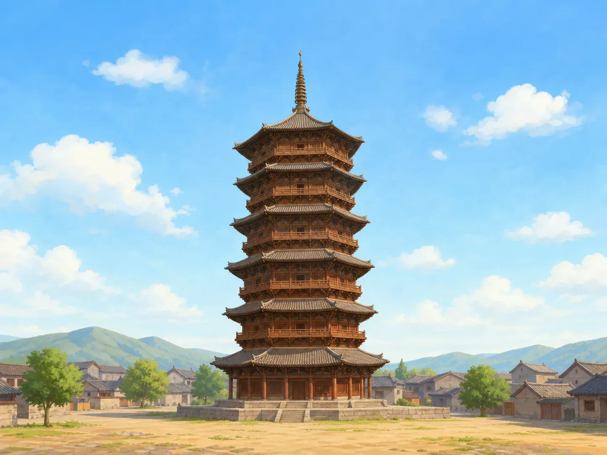
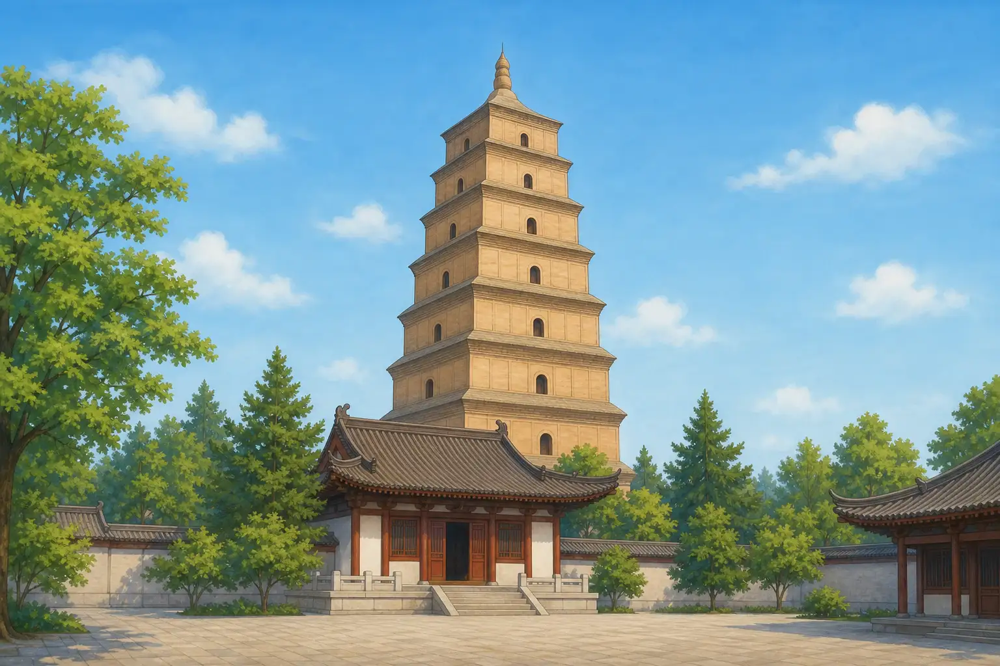

宝塔为什么不是普通的高楼？
Why Isn't a Pagoda Just a Tall Building?
Page 1
为什么中文叫“宝塔”？
Why Is It Called Baota in Chinese?

Chinese pagodas come in many forms. Some can be climbed, while others have little space inside or are nearly solid.
“宝塔”的“宝”，就是“宝贝”的“宝”。但它不是说每座塔里都堆满了金银珠宝。在古代佛教用语里，“宝”可以表示珍贵、神圣和尊敬。塔里常常保存shèlì · 佛陀或受敬重僧人留下、被人珍重保存的遗骨、骨灰或物品。、佛像或经书，所以人们也把佛塔尊称为“宝塔”。
英文用 pagoda 称呼这种亚洲建筑，不会把“宝”和“塔”一个字一个字翻译，所以它并不叫 treasure tower。
宝塔也不是中国独有的建筑。它的故事从古代印度开始。早期的窣堵波（stupa）通常是圆顶、接近实心的建筑，里面可能放着一个小盒子，保存舍利。舍利可能是佛陀或受人尊敬的僧人留下的骨灰、骨片或物品。就连中文的“塔”字，也来自 stupa 这个外来名称。
佛教传到亚洲不同地方后，宝塔也长出了不同模样。中国工匠把它和自己熟悉的高楼、木屋顶放在一起。经过很长时间，圆圆的窣堵波发展出了许多一层层向上升起的中国宝塔。
One common Chinese name for a Buddhist pagoda is bǎotǎ. The first part, bǎo, is the same word used for “treasure.” But this does not mean that every pagoda was filled with gold and jewels. In older Buddhist language, bǎo could describe something precious, sacred, and worthy of respect. Pagodas often held shèlì · 舍利 · Ashes, bone fragments, or objects associated with the Buddha or a respected monk., Buddhist images, or Buddhist texts, so people also called a Buddhist tower a bǎotǎ.
English uses the word pagoda for this kind of Asian building. It does not translate the two Chinese characters one by one, so we do not normally call it a “treasure tower.”
Pagodas are not found only in China. Their story began in ancient India. An early stupa was usually a rounded, nearly solid building. A small box inside might hold a relic. A relic could be ashes, a piece of bone, or an object left by the Buddha or a respected monk. Even the Chinese word tǎ came from this foreign name.
As Buddhism spread across Asia, pagodas took on different shapes. Chinese builders joined the older idea with the tall buildings and wooden roofs they already knew. Over many centuries, the rounded stupa developed into many kinds of Chinese pagodas with roofs rising layer by layer.
Page 2
每一道屋檐下面都是一层楼吗？
Does Every Eave Mark a Floor?
站在塔下，你可能会用手指数屋檐：“一、二、三、四……”屋檐就是屋顶伸出墙外的边。它能挡住一部分雨水和阳光。可是数完屋檐，不一定就知道塔里有几层。
有些楼阁式塔真的像多层楼，里面有楼梯，可以一层层登上去。有些密檐式塔把很多短屋檐排得很近，可屋檐后面并没有同样多的房间。还有一些塔内部很小，甚至接近实心。
材料也不一样。工匠可以用木头建塔，也可以用砖、石头或金属。木塔能做出伸展的屋檐，砖塔不怕木头那样容易着火。不同地方的工匠会按照用途、材料和自己的本领，让宝塔长成不同模样。
Stand below a pagoda and you may count the rows of eaves: “One, two, three, four...” An eave is the edge of a roof that sticks out past the wall. It helps keep some rain and sunlight away from the wall. But counting eaves does not always tell you how many floors are inside.
Some pagodas really are like tall buildings, with stairs that lead from floor to floor. Others stack many short eaves close together, but there is not a room behind every one. Some pagodas have very little space inside or are almost solid.
Builders also used different materials. A pagoda could be made of wood, brick, stone, or even metal. Timber made wide roofs possible. Brick did not catch fire as easily as wood. In each place, builders shaped the tower to fit its job, its materials, and the skills they knew.
Page 3
一座木塔怎么站了近一千年？
How Has a Wooden Pagoda Stood for Nearly 1,000 Years?

Yingxian Wooden Pagoda has five visible stories, six rows of eaves, and four hidden structural levels.
Shānxī · 中国北部省份，保存着许多重要古建筑。是中国北部的一个省，有点像美国的一个州。Yìngxiàn · 山西北部的县，以应县木塔闻名。是那里的一座县城。城里有一座建成于1056年的应县木塔。它大约有二十层楼那么高，主要结构用木头建成。站在塔下抬头看，层层屋檐像一把把大伞张开。
你可能会数出六道屋檐，可是木塔外面只有五层楼身。为什么多出一道？因为第一层有上下两道屋檐。塔里还有四个藏在可见楼层之间的结构层，所以内部一共能分出九层。这些暗层里有许多柱子、横梁和斜撑，帮助整座塔连成一个结实的木架。
木塔能保存到今天，不是只靠一种神奇的接头。八角形的塔身、里外两圈柱子、木梁和支撑都在一起工作。一代代人也不断检查和维修。今天有些部分已经倾斜或损坏，专家仍在监测和保护它，尽量不让问题继续加重。
Shānxī · 山西 · A northern Chinese province with many important historic buildings. is a province in northern China, a large area somewhat like a state. Yìngxiàn · 应县 · A county in northern Shanxi famous for its tall wooden pagoda. is a county there. Its famous wooden pagoda was completed in 1056. The tower is about as tall as a twenty-story building and is built mainly from wood. From below, its roofs spread outward like a stack of enormous umbrellas.
You may count six rows of eaves, but only five main stories are visible outside. Why is there an extra row? The first story has two rows of eaves, one above the other. Four more structural levels are hidden between the visible stories, making nine levels inside. Posts, beams, and sloping braces in these hidden levels help tie the tower into one strong wooden frame.
The pagoda has not survived because of one magical joint. Its eight-sided shape, two rings of columns, beams, and braces all work together. People have also checked and repaired it for generations. Some parts now lean or show damage. Experts watch these areas and work to keep the problems from getting worse.
Page 4
大雁塔为什么和一次旅行有关？
Why Is the Giant Wild Goose Pagoda Part of a Travel Story?

The Giant Wild Goose Pagoda was first built to hold Buddhist texts and other important objects that Xuanzang brought from India.
一千三百多年前，僧人Xuánzàng · 唐代前往印度求取佛经的僧人。从Cháng'ān · 中国古代都城，位置在今天的西安。出发，去印度学习佛教。长安是Táng cháo · 618年至907年的中国朝代。的都城，就是今天的Xī'ān · 中国著名古都，古代长安所在地。。玄奘走的是陆路，要穿过沙漠和高山，许多年后才回到中国。
玄奘带回了数百部用梵文写成的佛教经书，还有佛像和舍利。他需要一个安全的地方保存它们，也组织许多人把经文翻译成中文。652年，一座五层砖塔在Dà Cí'ēn Sì · 西安大雁塔所在的佛教寺院。里建了起来，后来被叫作大雁塔。
最早的塔后来损坏了，后人曾重建、加高和多次修理。今天的大雁塔是一座七层砖塔。
玄奘的旅行真的发生过。几百年后，讲故事的人把这段经历变成了一场神奇冒险。在小说Xīyóu Jì · 讲述唐僧师徒西行取经和一路奇遇的古典小说。里，Táng Sēng · 《西游记》中带领徒弟西行取经的僧人。和Sūn Wùkōng · 《西游记》中会七十二变、保护唐僧西行的美猴王。、Zhū Bājiè · 《西游记》中使用九齿钉耙的取经人之一。一起旅行，路上还遇到了许多妖怪。
真实的玄奘没有这些神奇伙伴。在一部分路程中，他与向导和其他同行者一起走。马和其他驮东西的动物也帮忙运送行李和经书。他们一起把数百部佛教经书带回了中国。
More than thirteen hundred years ago, a monk named Xuánzàng · 玄奘 · The Tang monk who traveled to India to study Buddhism and bring back scriptures. left Cháng'ān · 长安 · An ancient Chinese capital located in present-day Xi'an. and traveled to India to study Buddhism. Chang'an was the capital of Táng cháo · 唐朝 · The Chinese dynasty that lasted from 618 to 907.. Today, the city is called Xī'ān · 西安 · A major historic city and the modern location of ancient Chang'an.. Xuanzang traveled over land, crossing deserts and high mountains, and did not return to China for many years.
Xuanzang brought back hundreds of Buddhist texts written in Sanskrit, along with Buddhist images and relics. He needed a safe place to keep them, and he led a large team that translated the writings into Chinese. In 652, a five-story brick tower was built at Dà Cí'ēn Sì · 大慈恩寺 · The Buddhist temple in Xi'an where the Giant Wild Goose Pagoda was built.. It later became known as the Giant Wild Goose Pagoda.
The first tower was later damaged. People rebuilt it, made it taller, and repaired it many times. Today, the Giant Wild Goose Pagoda is a seven-story brick tower.
Xuanzang's journey really happened. Centuries later, storytellers turned it into a magical adventure. In the novel Xīyóu Jì · 《西游记》 · The classic novel about a scripture journey west with the Monkey King and his companions., the Táng Sēng · 唐僧 · The scripture-seeking monk protected by Sun Wukong and the other pilgrims in Journey to the West. travels with the Monkey King and Pigsy and meets many monsters along the way.
The real Xuanzang had no magical companions. On some parts of the trip, he traveled with guides and other people. Horses and other animals also helped carry supplies and books. Together, they brought hundreds of Buddhist texts back to China.